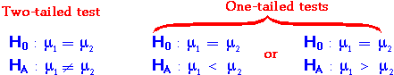
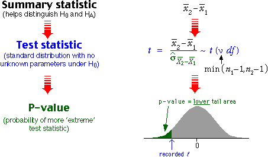

One- and two-tailed tests for differences
In a two-tailed test, the alternative hypothesis is that the two population means are different. A one-tailed test arises when we want to test whether one mean is higher than the other (or lower than the other).

Test statistic, p-value and conclusion
Consider a test for the hypotheses,
H0 : μ1 = μ2
HA : μ1 > μ2
The alternative hypothesis is only supported by very small values of  .
This also corresponds to small values of the test statistic t ,
so the p-value is the lower tail probability of the t distribution.
.
This also corresponds to small values of the test statistic t ,
so the p-value is the lower tail probability of the t distribution.

A small p-value is interpreted as giving evidence that H0 is false, in a similar way to all other kinds of hypothesis test.
Examples

Properties of p-values
We again stress that a statistical hypothesis test cannot provide a definitive answer. The randomness of sample data means that p-values are also random quantities, so there is some chance of us being misled by an 'unlucky' sample: